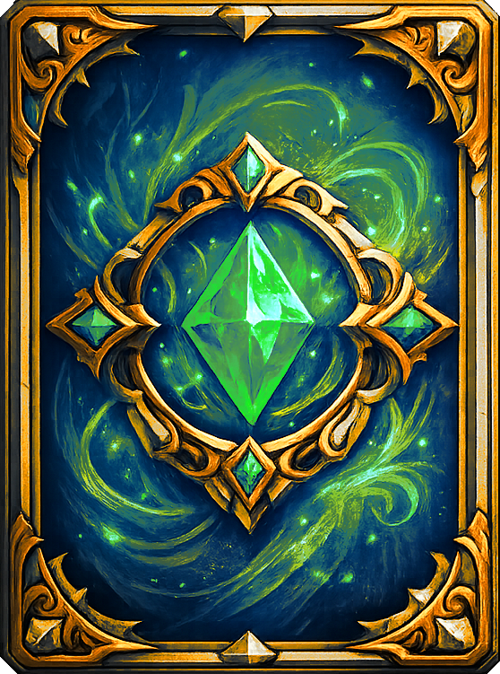
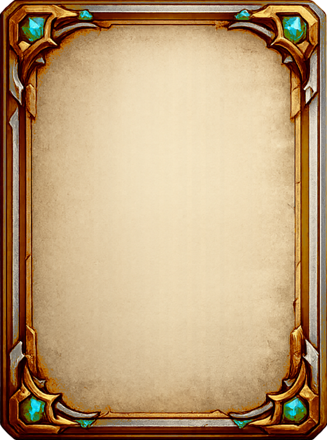
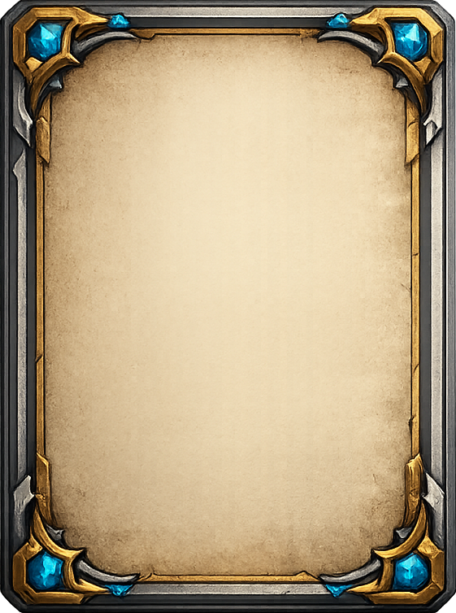

Last Updated: 2026-05-17
Card Sets
Card sets change the visual style of your cards. The card back — the design you see on face-down cards — and the card face — the background behind the emoji on face-up cards — can both be customized.
Included Card Sets
MemMoji ships with 2 card sets:
Default

Back
FaceBlue
Back
FaceChanging Card Sets
Open the Settings panel (gear icon or Escape key) and look for the Card Set: dropdown. This only appears if more than one card set is installed. Click directly on the card set name to open the dropdown and select a set — the cards update immediately. Your choice is saved automatically.
Installing Custom Card Sets
- Find the
assets/CardSets/folder inside the MemMoji directory. - Create a new folder inside
CardSets/— this becomes the set's name (for example,assets/CardSets/MyTheme/). - Add two PNG images to the folder:
face.png— shown on the front of matched and flipped cardsback.png— shown on unflipped cards
- Restart MemMoji — the new set will appear in the dropdown.
Tips for card set images
- Images can be any size — they're stretched to fit the card shape.
- Semi-transparent or lightly textured images look best.
- The card's background color still shows through (images are drawn at roughly 78% opacity).
- Both images should have a similar aspect ratio to avoid distortion.
Emoji Categories
MemMoji includes 5 different emoji theme packs (categories), each with 100 unique emoji. You can switch between categories in the Settings panel by clicking directly on the category name to open the dropdown — the change takes effect on your next level. Categories include different themes like faces, animals, food, objects, and more.
Your category choice is saved automatically.